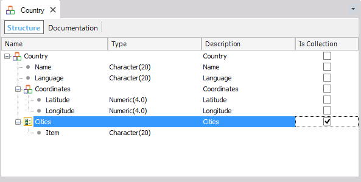

It returns a string with the JSON representation for the SDT or BC variable. Syntax&String = &SDT.ToJson([&Boolean]) Where:
SampleGiven the following SDT:  The result is:
{
"Name" : "Uruguay",
"Language" : "Spanish",
"Coordinates" :
{
"Latitude" : 30,
"Longitude": 35,
},
"Cities" : ["Montevideo", "Paysandu" ]
}
Scope
NoteThis method is available in Smart Devices on client-side for business components since GeneXus 16 upgrade 2. See AlsoFromJson Method |
| Backlinks | |
| Toc:Business Component | FromJson Method |